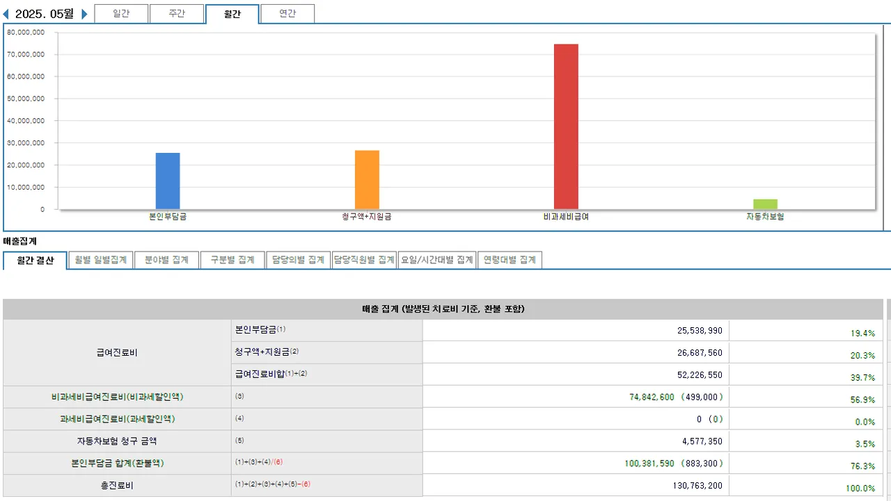
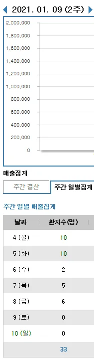

M) 빈의와 부의 사이 (0)주매출 380만원에서 3천만원이 되기까지
나는 아닐거라는 착각
사슬람 | 한의사 | 2025. 07. 23 | 조회수 3903
안녕하세요,
이 글은 제가 다른 커뮤니티에 연재했던 내용을 갈무리해
메디스트림에 맞게 다듬어 다시 전해드리는 글입니다.
당시 달렸던 댓글 중
'신졸들에게 이해는 못해도 머리에 박힐정도로 읽으라고 하고 싶습니다.'
라는 추천을 남겨주셨는데요,
그 말이 계속 마음에 남아 이렇게 메디스트림에도 소개해보려 합니다.
한의원 개원 후 나름 긴 시간 동안,
정말 많은 실패와 시행착오를 겪으며 배운 이야기들입니다.
앞으로 1주일에 한 편씩 연재할 예정이고요.
학생이거나, 개원을 아직 하지 않으신 2~30대 분들이 많은 플랫폼 특성상
읽는 분들을 고려하여 내용을 조금 수정하여 올릴 예정입니다.
그럼 시작해보겠습니다.
25년 5월 매출 인증합니다.
저번달 매출입니다.

365 아니고, 입원실 아니고, 프랜차이즈 아닙니다.
부원장님 한 분 모시고 공휴일 다 쉬는 주5 진료하고 있습니다.
그리고 4년반 전 매출입니다. (21년1월)

같은 자리 같은 한의원 매출입니다.
주매출 380만원 나왔네요.
개원초도 아니였고요.
병원시설, 치료방식, 근처 환경 변화, 건강 문제, 집안 우환 등 지금과 다른 특이사항이랄게 아무 것도 없었고
환자도 지금과 똑같이 진료 봤습니다. 아마 그 때가 오히려 더 열심히 봐줬을 거에요.
당시를 돌아보면, 평환이 단자리인 날이 더 많았습니다.
너무 안 되니 고민 끝에 직원도 1명으로 줄였고요.
환자 없이 적막한 한의원에서 직원에게 뭐라도 시키느라 힘들었습니다.
어느 토요일은 그러다 정신차려보니 퇴근시간이었고,
그제서야 그 날 환자가 단 한 명도 오지 않았다는 사실을 깨달았습니다.
지금도 그 토요일에 느꼈던 기분이 잊혀지지가 않습니다.
이런 시기가 꽤 오래 갔습니다.
불안과 공포로 매일 밤 식은 땀으로 베개가 축축했고, 커뮤질만 했는데도 하루가 끝나면 극도로 피곤했습니다.
제가 그 시기를 지나서 지금에 이르기에는 다음과 같은 깨달음들이 유효했습니다.
- 한의원은 장사고, 장사의 본질은 이익의 극대화다.
- 부의의 자질 중 제일 중요한 것은 자기확신이다.
- 한의원 = 원장이다. 잘 먹고 잘 쉬고 운동해라.
- 직원도 환자도 인간이기 전에 동물이다.
- 되던 안 되던 계속 뭔가 시도해라.
이를 알게 되기까지, 제가 어떤 일들을 겪었는지 함께 나눠보려 합니다.
앞으로 제가 풀어놓을 얘기들은
개원 후 저의 제일 한심하고 찌질하고 빌빌대는 모습들이 가감 없이 담겨있습니다.
그리고, 이 모습은 누군가에겐 현재이자, 누군가의 곧 닥쳐올 미래일 수도 있습니다.
"설마, 열심히 하면 어떻게든 되겠지."
"지금 매출도 나쁘지 않으니까, 평균 이상은 가겠지."
"개원했는데 월천만원은 가져가야되지 않겠어?"
저도 그렇게 생각했습니다.
항상 제가 일했던 한의원은 잘 나갔고,
조금만 열심히 해도 환자는 내 노력만큼 그대로 늘어났습니다.
근무했던 한의원들에서, 부원장이 5명이든 10명이든 제가 항상 에이스였습니다.
대표원장님께도 환자들에게도 가장 사랑받는 원장이었고요.
그래서 개원하면 당연히 잘 될 줄 알았습니다.
여러분은 어떠신가요?
개원하기 전에 '혹시 잘 안 될 수도 있다'는 생각, 해보신 적 있으신가요?
아니면 막연히, '나는 잘 될 것'이라 믿고 계셨나요?
하지만 진료와 경영은 완전히 다른 능력입니다.
돌아보면, 부원장 시절의 저는 진료 외엔 아무것도 몰랐습니다.
지금 “왜 저렇게밖에 못하나” 생각하는 한의사 선배들,
그 모습이 여러분의 미래일 수도 있습니다.
그때의 저처럼 착각 속에 있는 누군가에게,
그리고 지금 이 순간 힘겹게 버티고 있는 또 다른 누군가에게,
불필요한 시행착오를 줄이고 지금의 상황에서 벗어나는데
앞으로의 글들이 작은 참고점이 되기를 바랍니다.
댓글 (19)
-
익명
> 해당 댓글은 작성자와 운영자만 볼 수 있습니다.- 익명
> 해당 댓글은 작성자와 운영자만 볼 수 있습니다.
- 익명
-
사슬람 (한의사) | 2025. 07. 25
> LD50 치료에 자신 있는 비급여가 있으신가요? 원내 환자분들이 충분히 있는 경우라면, 내가 어떤 환자한테는 치료를 위해 어떤 비급여를 반드시 권해야한다는 마음이 나부터가 뚜렷하지 않은 경우가 많습니다. -
LD50 (한의사) | 2025. 07. 25
> 사슬람 아주 솔직하게 고합니다 거짓도 없고 솔직합니다. 진심입니다. 그냥 추나하면 가벼운 근골격계는 다 고칠수있을거같은 자신감이 있어서 오히려 약침이나 약을 못권하는 상태입니다. 어려워도 두세달 잘 따라오면 되는데.. (진짜로 치료가 되니 아니니를 떠나서.. ) 환자에게 더 빠른방법이 필요하나 물어보고 필요하다 할때만 나가는 수준입니다. 내과질환등은 가끔 그부분을 주소증으로 오는 초진에게만 약권합니다. 일반 환자와는 치료 관련없는 이야기등은 잘 안해서 정보파악이 느린 편입니다. 또 기술자형이다보니 감성이 독특해서 관계쌓는데 어려움이 있습니다. 그래서 더더욱 환자가 먼저 친해지고자 내밀지 않으면 정보파악을 잘 안하게 성장했습니다.. 이전 직장들도 매출비례 인센이다보니 비급여 리스크보다 추나 횟수 다 채우고 그거로 만족주는게 더 잘나오지 않아? 이런 마음도 있었구요.. (복추 20회 풀청구가 약 세달보다 쉽잖아요..) 요즘 고민의 결론은 1. 보편적인 감성의 업무용 가면을 만들자. -> 일반적으로 하는 친해져서 먼저 문의하기전에 캐치해보는 연습 2. 될거같아도 더 빠른길 루틴하게 묻고 메뉴판 보여주자 -
익명
> 삭제된 댓글입니다. -
익명
> 삭제된 댓글입니다. -
익명
> 삭제된 댓글입니다. -
사슬람 (한의사) | 2025. 07. 26
> LD50 백날 추나해봤자 한약 쓰는게 근본치료다 생각이 들면 루틴으로 노력하지 않아도 마음에서 우러나와서 권하게 됩니다. 라포가 생기기 전이더라도 진심은 환자의 마음에 전해집니다. 임상경험이 쌓이면 굳이 환자에게 묻지 않아도 어떤 비급여가 치료에 효과적인지 감이 보통 옵니다. 그런데 그러려면 일단은 많이 그 비급여를 뿌려봐야 되는데요. 원장님처럼 눈치 느리고 확실한거 좋아하시고, 내가 잘 아는 것에 집중하는걸 선호하고 알지 못하는 비급여를 권하는데 심리적 거부감이 작동하는 분들이 있습니다. 이런 경우는 당연히 새로운 치료기술에 대해 그 N수를 늘리기가 너무 힘듭니다. 참관을 하셔서 견문을 넓히시고요. 스터디를 하며 케이스를 서로 나누거나, 내가 환자로 직접 치료를 받는 것도 상관 없으니 일단 최대한 많이 그 비급여 치료를 접하시는게 중요합니다. 눈으로 몸으로 시간을 많이 쏟으세요. 원장님 같으신 분들은 머리에서 명확해질 정도로 좀 빡세게 하셔야 마음에도 들어오기 때문에 어쩔 수 없습니다. 모든 치료수단은 분명히 한계가 있습니다. 한의학 아니 사실은 치료라는게 원래 어쩔 수 없다 생각합니다. 근골격계 질환이더라도 낫지 않는 환자를 끝까지 물고 늘어져보세요. 자궁 적출한 환자의 생리주기마다 반복되는 요통, 높은 심박과 얕은 호흡으로 인한 어깨뭉침, 나르시스트 어머니 때문에 생기는 만성두통.. 고쳤다고 생각한 환자들도 3년 이상 롱타임으로 지켜보다 보면 내가 정말 이 사람을 치료했던게 맞는지, 내가 하는 치료가 환자를 정말 낫게 하는거라고 할 수 있는지에 대해 생각이 바뀌는 경우가 많습니다. -
사슬람 (한의사) | 2025. 07. 26
> LD50 꼭 한약 뿐 아니라 모든 비급여에 해당하는 말이라고 생각합니다. 일단은 지금 강점이신 근골격계 질환과 추나를 기본 베이스캠프로 삼고 조금씩 치료영역을 넓혀나가보세요. 치료는 그걸로 어떻게든 해내시고 거기에 곁들이는 식으로 새로운 비급여를 같이 무지성으로 뿌리다보면 그 효과와 한계, 적용 대상 등이 눈에 들어오실겁니다. (댓글 수정이 안 되길래 삭제하고 다시 달았습니다) -
제스프리골드키위 (한의사) | 2025. 07. 23
> 오ㅋㅋ 글이 기대가됩니다ㅎㅎ -
Insighter (한의사) | 2025. 07. 23
> 이미 읽었지만 또 봐야하는 글 -
메딕 (한의사) | 2025. 07. 24
> 필진공모전 참여 감사합니다. 원장님의 소중한 경험과 노하우를 시리즈로 공유해주셔서 정말 감사드립니다. 많은 회원님들이 이런 체계적인 콘텐츠를 기다리고 계셨습니다. 혹시 다른 원장님들도 관심 있으시다면, 현재 필진공모전이 진행 중입니다. 자세한 내용: https://medistream.co.kr/articles/138563 앞으로의 연재도 기대하겠습니다. -
안젤라 (한의사) | 2025. 07. 24
> 기대기대!! -
msr0820 (한의사) | 2025. 07. 24
> 좋은 글 기대됩니다! 감사합니다 -
Qurallf (한의사) | 2025. 07. 24
> 빨리 다음 화 부탁드려요 ㅎㅎㅎ -
zㅣ존한의사 (한의사) | 2025. 07. 24
> 어떤 강의 강사님의 추천을 받아서 원장님 글 감명깊게 읽었는데, 2~30대를 위해 다듬어서 메디에 올려주신다니 기대가 됩니다^^~~ 원장님 글 보면서 제가 같은 방향으로 하고있으면 안도감과 자신감을, 정반대로 하고있는건 개선해서 더 좋아질 수 있겠구나 하는 희망을 봤었네요ㅎㅎㅎ 좋은 글 올려주셔서 감사해요~~ 앞으로도 기대할게요! -
nohster (한의사) | 2025. 07. 25
> 기대가 많이 됩니다. -
메딕 (한의사) | 2025. 07. 31
> 필진공모전 참여 감사합니다. 원장님의 소중한 경험과 노하우를 시리즈로 공유해주셔서 정말 감사드립니다. 많은 회원님들이 이런 체계적인 콘텐츠를 기다리고 계셨습니다. 혹시 다른 원장님들도 관심 있으시다면, 현재 필진공모전이 진행 중입니다. 자세한 내용: https://medistream.co.kr/articles/138563 앞으로의 연재도 기대하겠습니다.